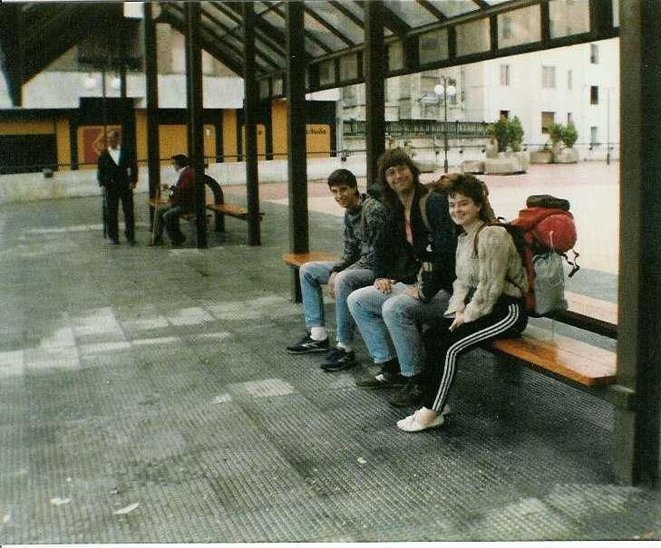

Inter Rail 1986 Day 2
Sunday 24th August 1986
The bloody train guard came in to check tickets at 1.15am. Didn't get much sleep after that as I sniffled a lot
as my cold finally decided to visit in full. We arrived in Bordeaux at 6.10am. It took us a while to find the right platform but when we did
we got another compartment to ourselves. We went back to sleep as the train passed through Bayonne, Biarritz and Dax before crossing the
France / Spain border at Irun.

On arrival we found that the train we had planned to catch didn't run on a Sunday so we had to wait 4 hours for the next rapid train. We
wandered into town which was deserted. All the shops and restaurants were closed.
Eventually a little old man approached us on the street and asked us, in Spanish, if we were looking for somewhere to eat. We said Yes and
followed him back to his flat and ended up sitting on the third floor of a nearby building, in his front living room being served a gorgeous
meal by his wife. We started with a lovely big bowl of soup with noodles and chick peas, followed by steak and chips with salad, and a pear
each plus a litre of wine for 800 pesetas. It was absolutously delicious.
Having eaten, we wandered around the town which had suddenly woken up, people being out and about for a Sunday late afternoon stroll post
siesta. Hung about for a bit then made our way to the station to make our reservations on the Talgo.
It cost us a fiver each for the Talgo reservations but it was worth it as a non supplement train left 1 hour earlier and got in 1 hour later.
The Talgo is air-conditioned with reclining seats and musak but it doesn't exactly dash about.
The countryside we passed through was brilliant, going from rugged Atlantic to Heidi type mountains and valleys, to large fields with straw
fields.
Got to Burgos at 6.30pm. It took us 2 hours and five sets of directions (including a useless map drawn by a policeman) to find out our target,
the youth hostel, was shut. Ended up at a hostal run by a woman who had given us directions.
1 big room for 4, with 2 sinks and a toilet plus a shower upstairs. That plus coffee and sweet cakes in the morning cost 1000 pesetas.
Had a quick wander through the local nightlife then bought a bottle of wine of 50p. Ended up buying 2 more and being given glasses. The vino
was drunk whilst playing contract whist. Led to a damn good nights sleep.
Notes
- Two Americans were on the Talgo with Eurail passes but no reservations / supplements paid. Once the guard found out, he had them put
off the train at the next unscheduled station. The crewcut hairstyled woman blew her top, called the guard a "fucking asshole" twice and
"You bastard" once and threatened the intervention of the American Embassy. Free "inflight" entertainment thrown in. We were glad we had
paid the supplement.
- All the announcements were made in Spanish, French, Italian, English (a very pukka accent) and German.